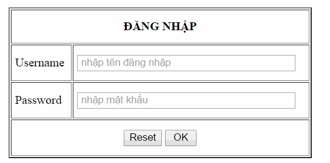
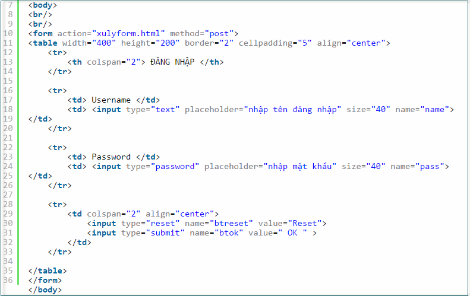
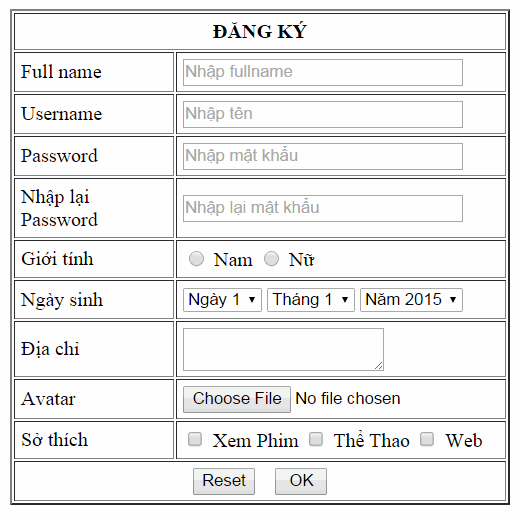
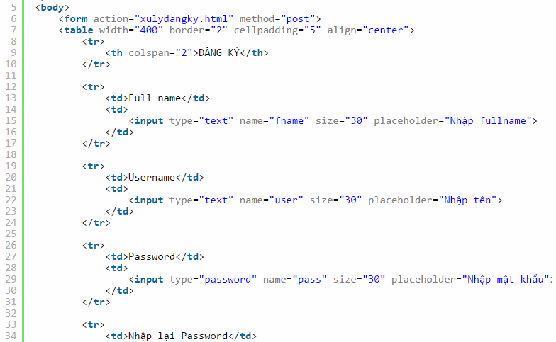
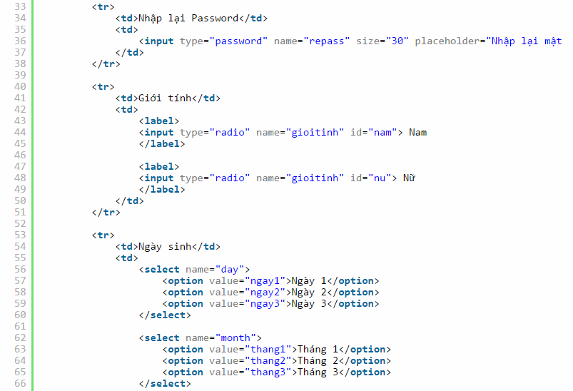
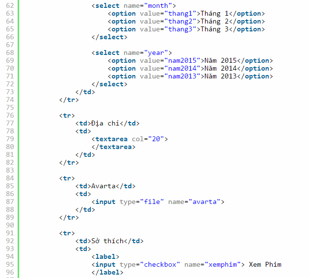
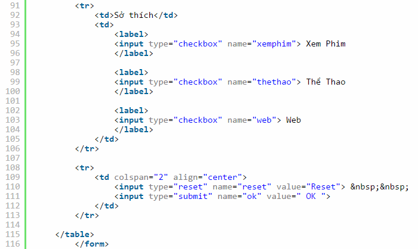

Bài tập về nhà Buổi 5 - HTML
Bài tập 1:
Bạn hãy vào đây và làm lần lượt các bài tập trong các mục Attributes, Headings, Paragraph, Link, Image
Bài tập 2:
Bạn hãy tải file này về, mở file Article-HTML-Only.pdf ở trong "to-student". Nhiệm vụ của bạn là sử dụng HTML để tạo ra một trang giống như vậy. Bên cạnh file Article-HTML-Only.pdf, bạn sẽ tìm thấy những tấm ảnh cần thiết để hoàn thành theo mẫu.
Bài tập 3
Tạo 1 bản CV Đơn Xin Việc (cv-ten-cua-ban.html) trong đó có
- Đưa tiêu đề của CV vào thẻ (title)
- Sử dung các thẻ Header (h1 -> h6)
- Sử dụng thẻ (p) để mổ tả các thông tin giới thiệu bản thân
- Sử dụng thẻ (img) để chèn ảnh cá nhân của mình
- Sử dụng cấu trúc (ul>li) đưa ra thông tin cá nhân của bạn
- Sử dụng các thẻ định dạng văn bản để nhấn mạnh các điểm mạnh, điểm yếu của bạn
- Sử dụng thẻ (a) link đến địa chỉ fb của bạn
- Chèn 1 file âm thanh – nhạc nền cho phát tự động tham khảo
- Nhúng vào 1 bộ phim trên Youtube mà bạn yêu thích
Bài tập 4
A. Tạo 1 form đăng nhập theo code như hình sau
Mô tả

Code

B. Tạo 1 form đăng ký theo code như hình sau
Mô tả

Code
Mọi người chú ý các ảnh chụp bị thừa code nhé
- 
- 
- 
- 
C. Tạo 2 trang xulyform.html và xulydangky.html
Tạo html giống ảnh sau

Bạn có thể lấy các mẫu icon tại đây